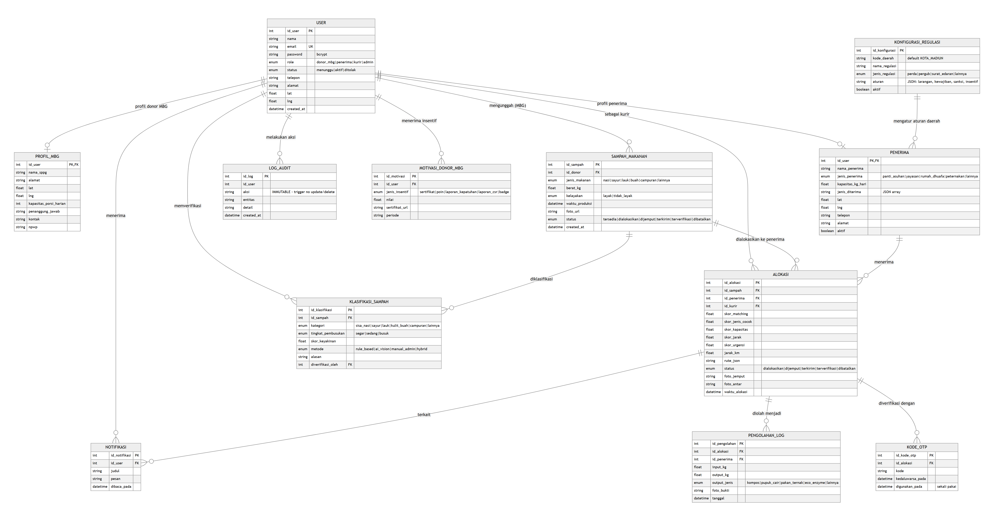
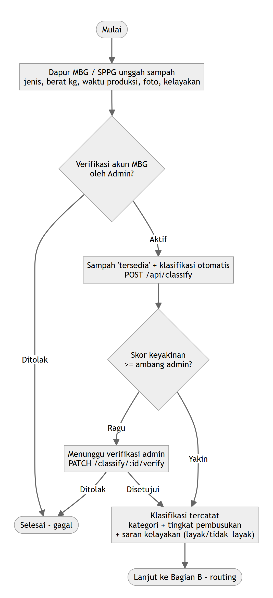
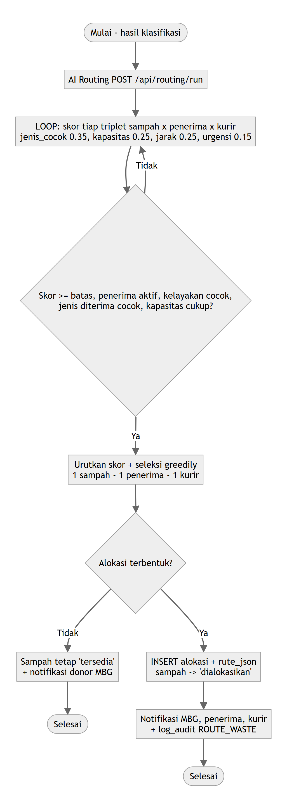
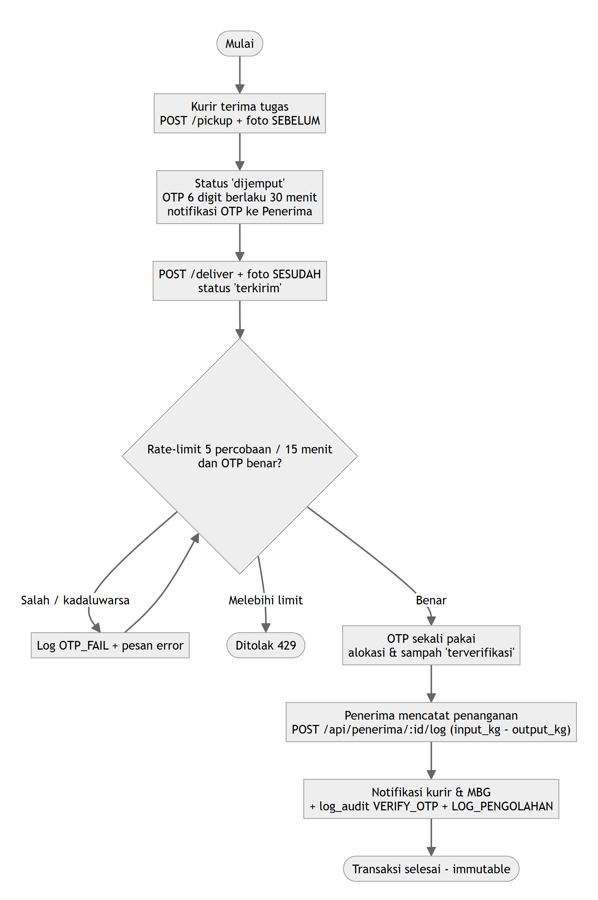
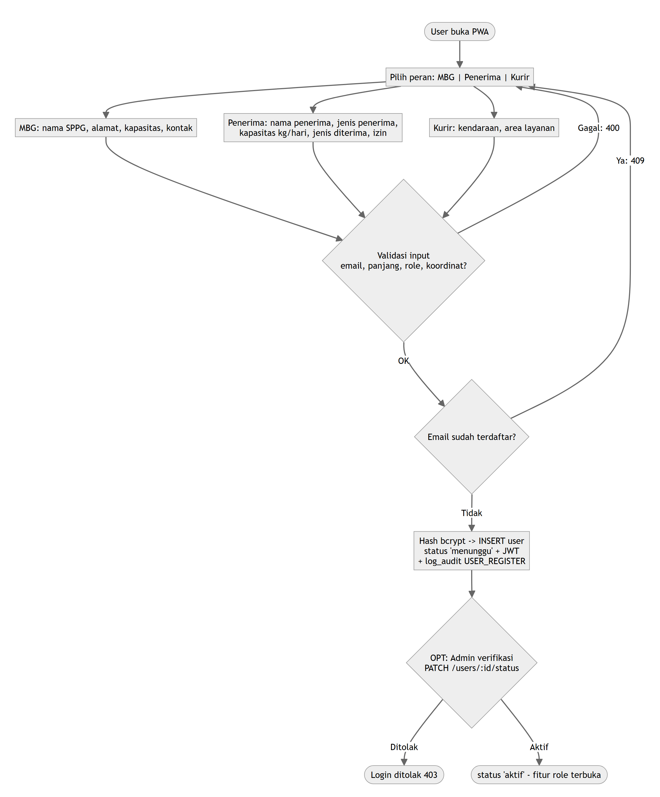
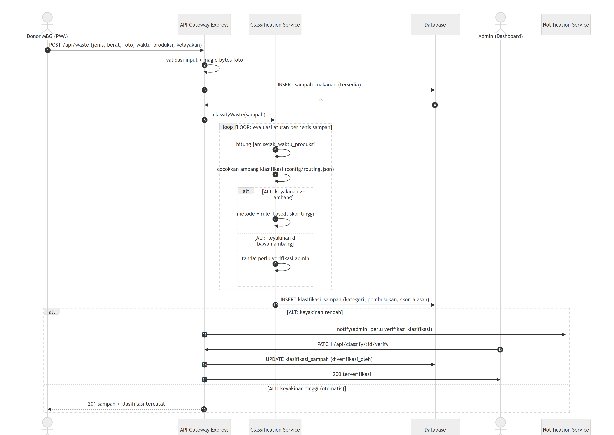
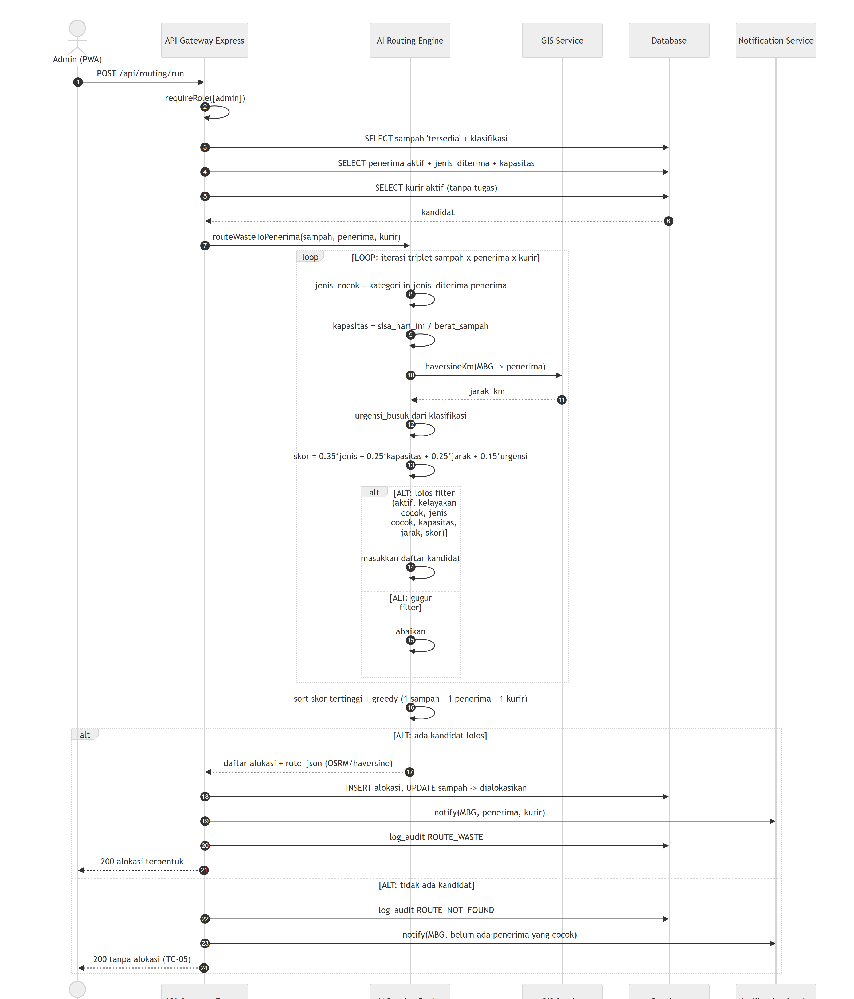
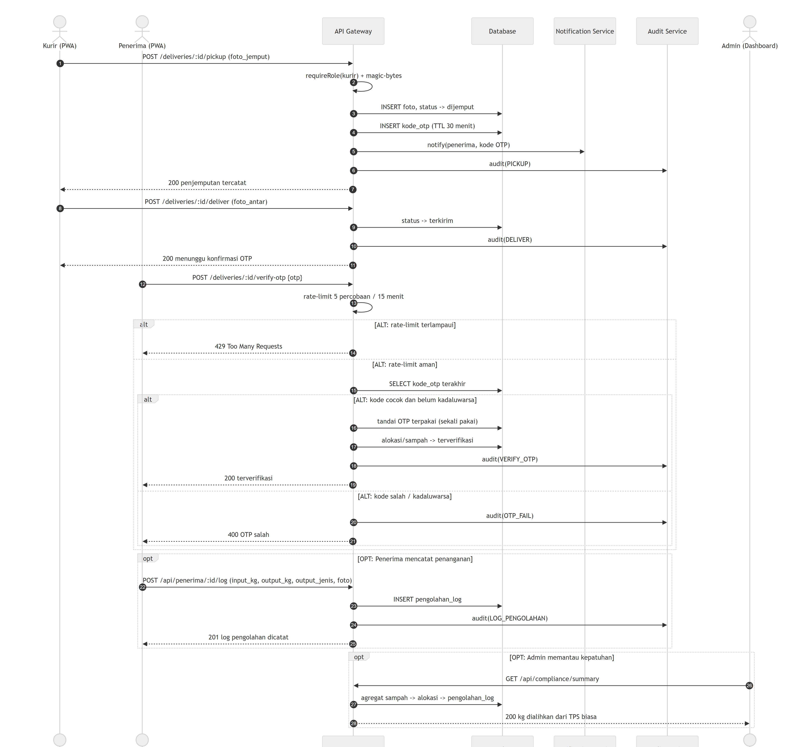
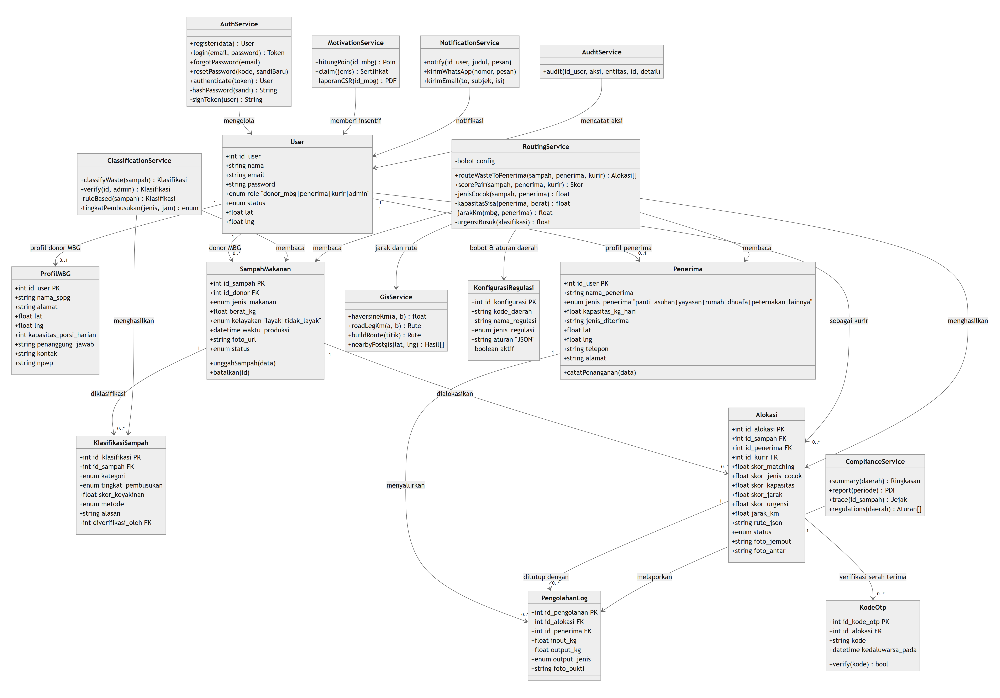
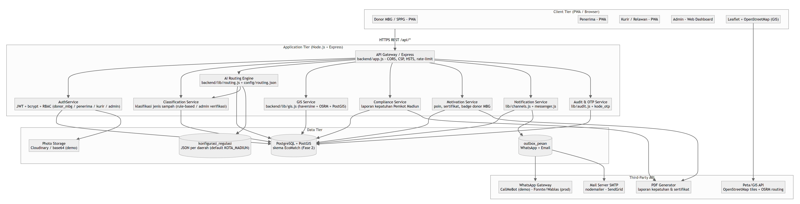

Program Makan Bergizi Gratis (MBG) di Kota Madiun menghasilkan sampah makanan setiap hari berupa nasi sisa, sayur, lauk, kulit buah, dan sisa campuran dari dapur/SPPG. Berdasarkan regulasi daerah, TPS biasa sudah tidak boleh menerima sampah organik, sehingga sisa makanan MBG harus disalurkan ke lembaga penerima yang tepat — panti asuhan/yayasan bila layak konsumsi dan peternakan bila tidak layak. Permasalahan proses bisnis saat ini dianalisis dengan kerangka PIC (Performance, Information, Economics, Control, Efficiency, Service):
Solusi bisnis yang diusulkan adalah platform digital EcoMatch: sistem AI Routing yang mengklasifikasi jenis sampah dan kelayakan konsumsi, memilih penerima terbaik (layak ke panti/yayasan, tidak layak ke peternakan) berdasarkan kapasitas, jarak/rute, dan urgensi pembusukan, serta menghasilkan bukti traceability dan laporan kepatuhan regulasi daerah Kota Madiun.
| Aktor | Karakteristik | Hak Akses |
|---|---|---|
| Donor MBG (SPPG) | Pengelola dapur MBG, melek teknologi dasar, membutuhkan bukti kepatuhan laporan ke Pemkot | Registrasi & unggah sampah (termasuk kelayakan konsumsi), melihat riwayat dan jejak traceability, mengklaim sertifikat/poin (FR-02, FR-15) |
| Penerima | Panti asuhan, yayasan, rumah dhuafa, atau peternakan di Kota Madiun; memantau kapasitas harian | Kelola profil & jenis diterima, konfirmasi OTP, catat penanganan (FR-03, FR-08, FR-12) |
| Kurir/Relawan | Individu/relawan lapangan, kemampuan teknis dasar, memiliki kendaraan | Terima tugas, lihat rute GIS, unggah foto bukti pickup/deliver (FR-05, FR-07) |
| Administrator | Tim pengelola platform (Dinas terkait/tim MBG) | Verifikasi akun & klasifikasi, jalankan AI Routing, kelola pengguna/penerima/regulasi, laporan kepatuhan (FR-09, FR-10, FR-11, FR-14, FR-16) |
| Sistem | Agen otomatis: mesin klasifikasi, AI Routing, scheduler auto-expire, agregasi laporan | Menjalankan tugas terjadwal dan menghasilkan keputusan routing/notifikasi (FR-04, FR-11, FR-17) |
Koordinasi penyaluran sampah makanan MBG dilakukan manual: pengelola MBG menepon/mengirim pesan kepada pengelola panti asuhan atau peternakan satu per satu untuk menanyakan kesediaan dan kapasitas, memilih penerima berdasarkan perkiraan jarak, lalu mencatat serah terima di buku tamu. Tidak ada klasifikasi jenis sampah maupun kelayakan konsumsi, tidak ada pemantauan kapasitas waktu nyata, dan bukti penanganan hanya berupa kertas yang sulit diaudit saat diminta laporan kepatuhan oleh Pemkot Madiun.
Pengelola MBG cukup mengunggah data sampah makanan (termasuk kelayakan konsumsi) melalui PWA; sistem mengklasifikasi jenis dan tingkat pembusukan serta memberi saran kelayakan, menjalankan AI Routing untuk memilih penerima terbaik (layak ke panti/yayasan, tidak layak ke peternakan) beserta rute jalan tercepat, menugaskan kurir, memverifikasi serah terima dengan foto dan OTP, mencatat penanganan di penerima, sekaligus membangun jejak traceability dan laporan kepatuhan secara otomatis.
| Istilah | Definisi |
|---|---|
| Donor MBG (SPPG) | Pengelola dapur Makan Bergizi Gratis yang menghasilkan dan mengunggah sampah makanan; wajib menyalurkan agar patuh regulasi daerah. |
| Penerima | Lembaga penerima sisa makanan MBG di Kota Madiun: panti asuhan, yayasan, atau rumah dhuafa (untuk sisa layak konsumsi), dan peternakan (untuk sisa tidak layak). |
| Kelayakan Konsumsi | Status sisa makanan: layak dikonsumsi (disalurkan ke panti/yayasan) atau tidak layak (diarahkan ke peternakan). Ditentukan donor saat unggah, dengan saran AI berbasis tingkat pembusukan yang boleh dikoreksi. |
| Kurir / Relawan | Penjemput di dapur MBG dan pengantar sampah ke penerima, wajib mengunggah foto bukti dan memverifikasi OTP. |
| Klasifikasi Sampah | Penentuan kategori sampah (nasi, sayur, lauk, kulit buah, campuran) dan tingkat pembusukan beserta skor keyakinan oleh sistem. |
| AI Routing | Algoritma pemilihan penerima terbaik dengan bobot jenis_cocok, kapasitas, jarak, dan urgensi, ditambah filter kelayakan konsumsi (FR-04/FR-13). |
| GIS (Geographic Information System) | Sistem informasi geografis untuk peta, jarak, dan rute (Leaflet, OpenStreetMap, OSRM, PostGIS). |
| Sampah Makanan (Food Waste) | Sisa makanan dari dapur MBG: nasi, sayur, lauk, kulit buah, dan campuran — dapat berstatus layak atau tidak layak konsumsi. |
| Traceability | Jejak audit end-to-end sampah dari unggahan MBG, klasifikasi, alokasi, serah terima, hingga penanganan di penerima. |
| OTP (One Time Password) | Kode verifikasi sekali pakai 6 digit dengan masa berlaku 30 menit untuk konfirmasi serah terima di penerima. |
| Konfigurasi Regulasi | Aturan daerah (larangan, kewajiban, sanksi, insentif) disimpan dalam JSON per kode daerah (FR-16/NFR-11). |
| Admin | Pengguna dengan hak akses penuh: verifikasi akun/klasifikasi, menjalankan routing, konfigurasi regulasi, dan laporan. |
EcoMatch adalah platform digital AI Routing penyaluran sisa makanan MBG ke penerima yang mengintegrasikan aplikasi PWA multi-peran (Donor MBG, Penerima, Kurir) dengan dashboard Administrator, mesin klasifikasi sampah, mesin routing multi-kriteria, serta modul kepatuhan regulasi Kota Madiun.
Melalui aplikasi PWA, pengelola MBG mengunggah sampah makanan (jenis, berat, waktu produksi, foto, kelayakan konsumsi), sistem mengklasifikasinya lalu memilih penerima terbaik berdasarkan kelayakan (layak ke panti/yayasan, tidak layak ke peternakan), kapasitas tersisa, jarak/rute, dan urgensi; kurir menjemput dan mengantar dengan bukti foto dan OTP, penerima mencatat penanganan, dan Admin memantau laporan kepatuhan.
Tabel 3.1 Kebutuhan Fungsional (FR-01 s.d. FR-17) — sumber: docs/SKPL_EcoMatch_v2.0.docx (BAB III.a).
| Kode | Nama Fitur | Deskripsi Kebutuhan | Aktor |
|---|---|---|---|
| FR-01 | Autentikasi & RBAC | Pengguna mendaftar/masuk dengan peran donor_mbg, penerima, kurir, atau admin; akun baru berstatus menunggu sampai diverifikasi Admin. | Semua Aktor |
| FR-02 | Unggah Sampah Makanan | Donor MBG mengunggah jenis makanan, berat (kg), waktu produksi, foto, dan kelayakan konsumsi (layak/tidak_layak — boleh dikoreksi atas saran AI); status awal 'tersedia'. | Donor MBG |
| FR-03 | Profil Penerima | Penerima mengelola profil: jenis penerima (panti asuhan, yayasan, rumah dhuafa, peternakan, lainnya), kapasitas kg/hari, jenis sampah yang diterima, radius layanan, dan izin. | Penerima |
| FR-04 | AI Routing & Alokasi | Sistem memilih penerima + kurir terbaik untuk tiap sampah (filter aktif, kelayakan: layak hanya ke panti/yayasan, tidak_layak hanya ke peternakan; jenis diterima, kapasitas, jarak, skor) dan menyimpan alokasi beserta rute. | Sistem, Admin |
| FR-05 | Rute GIS | Sistem menghitung jarak (haversine/PostGIS) dan rute jalan (OSRM) Donor MBG -> Penerima; kurir melihat peta rute di Leaflet. | Sistem, Kurir |
| FR-06 | Notifikasi Multi-kanal | Notifikasi in-app, WhatsApp, dan email melalui outbox pesan untuk status sampah, tugas kurir, dan OTP. | Sistem |
| FR-07 | Foto Bukti Pickup & Deliver | Kurir wajib mengunggah foto sebelum penjemputan dan setelah pengantaran; file divalidasi magic-bytes. | Kurir |
| FR-08 | Verifikasi OTP Serah Terima | Penerima memasukkan OTP 6 digit (TTL 30 menit, sekali pakai, maksimal 5 percobaan/15 menit) untuk menutup transaksi. | Penerima |
| FR-09 | Dashboard Monitoring & Analitik | Admin memantau kg dialihkan dari pembuangan di TPS biasa, jumlah penerima aktif, cakupan wilayah, dan grafik harian/bulanan. | Admin |
| FR-10 | Manajemen Pengguna & Audit | Admin memverifikasi/menonaktifkan akun dan membaca log audit yang bersifat immutable. | Admin |
| FR-11 | Klasifikasi Jenis Sampah | Sistem mengklasifikasi kategori dan tingkat pembusukan dengan skor keyakinan + alasan, dilengkapi saran kelayakan konsumsi (layak/tidak_layak); Admin memverifikasi bila keyakinan rendah. | Sistem, Admin |
| FR-12 | Registrasi & Catatan Penanganan | Penerima mendaftar, mengelola profil & daftar penerima, dan mencatat catatan penanganan (input_kg, output_kg, jenis output, foto bukti). | Penerima |
| FR-13 | AI Routing Sisa Makanan ke Penerima | Bobot routing: jenis_cocok 0.35, kapasitas 0.25, jarak 0.25, urgensi 0.15; filter kelayakan konsumsi; radius maksimal 15 km; batas skor 0.3. | Sistem |
| FR-14 | Dashboard Kepatuhan Regulasi | Laporan kg dialihkan, persentase sampah tidak dibuang ke TPS biasa, dan rekap per penerima/periode siap ekspor PDF. | Admin |
| FR-15 | Modul Motivasi Donor MBG | Akumulasi poin per kg dialihkan, klaim sertifikat kepatuhan, dan laporan CSR untuk lembaga MBG. | Donor MBG, Admin |
| FR-16 | Konfigurasi Regulasi Daerah | Admin mengelola aturan larangan/kewajiban/sanksi/insentif dalam JSON per daerah (default KOTA_MADIUN). | Admin |
| FR-17 | Traceability End-to-End | Jejak lengkap sampah_makanan -> klasifikasi_sampah -> alokasi -> pengolahan_log untuk audit kepatuhan. | Admin, Penerima |
Trasebilitas pemenuhan: seluruh FR-01 s.d. FR-17 dipetakan ke diagram alur, use case, ERD, activity, sequence, dan class diagram pada Bab III; serta kebutuhan non-fungsional pada tabel 3.2.
Tabel 3.2 Kebutuhan Non-Fungsional (NFR-01 s.d. NFR-11) — sumber: docs/SKPL_EcoMatch_v2.0.docx (BAB III.b).
| Kode | Kategori | Deskripsi Kebutuhan |
|---|---|---|
| NFR-01 | Keamanan | Autentikasi JWT (12 jam) + bcrypt + RBAC donor_mbg/penerima/kurir/admin, query parameterized, security headers (CSP/HSTS), dan rate-limit. |
| NFR-02 | Performa | Waktu respons API dan proses AI Routing (termasuk fallback ke mesin JavaScript) kurang dari 3 detik per permintaan. |
| NFR-03 | Ketersediaan | Sistem tersedia 24/7 dengan target uptime minimal 99%, healthcheck /api/health, auto-restart, monitoring berkala, dan backup basis data. |
| NFR-04 | Skalabilitas | Stateless (tanpa sesi server) sehingga dapat diskalakan horizontal hingga 5.000 pengguna aktif; koneksi pooling PostgreSQL. |
| NFR-05 | Usability | PWA responsif dengan input minimal (maksimal 5 langkah per aksi), pesan error JSON yang konsisten, dan mode luring untuk penampilan data. |
| NFR-06 | Reliabilitas Data GIS | Akurasi kalkulasi jarak dan rute minimal 95% dengan pemisahan perhitungan jarak (haversine/PostGIS) dan visualisasi peta (Leaflet). |
| NFR-07 | Portabilitas | PWA berjalan pada browser modern Android/iOS 3 tahun terakhir dan desktop, tanpa aplikasi native terpisah. |
| NFR-08 | Auditabilitas | Seluruh aksi penting tercatat pada log_audit yang immutable (trigger basis data), dilengkapi foto bukti dan OTP sekali pakai. |
| NFR-09 | Kepatuhan Regulasi | Setiap kg sisa makanan MBG terlacak dari donor hingga penerima dan output penyalurannya; laporan kepatuhan Pemkot Madiun tersedia dan dapat diekspor (traceability). |
| NFR-10 | Akurasi Klasifikasi | Akurasi klasifikasi jenis sampah minimal 85% melalui rule-based transparan dengan skor keyakinan dan verifikasi admin bila keyakinan rendah. |
| NFR-11 | Fleksibilitas Daerah | Aturan regulasi disimpan sebagai data (JSON per kode_daerah, default KOTA_MADIUN) sehingga dapat berubah tanpa perubahan kode. |
Pengembangan sistem EcoMatch menggunakan metode Agile-Scrum karena kebutuhan sistem — khususnya parameter dan bobot algoritma AI Routing — berpotensi menyesuaikan diri berdasarkan hasil uji coba/pilot bersama mitra donor dan lembaga penerima. Tahapan yang diterapkan:
Empat alur inti sistem dirender langsung dari node dan edge pada file docs/arsitektur/UML_EcoMatch.drawio (halaman activity-unggah-klasifikasi-mbg, activity-routing-mbg-tps, activity-serah-terima-otp, dan activity-registrasi-eco-match). Setiap halaman berikutnya memuat satu flowchart utuh beserta keterangannya.
Use case berikut disusun baru dengan sintaks Mermaid, memuat aktor, batas sistem, 14 use case, serta relasi include/extend.
flowchart LR
classDef actor fill:#DAE8FC,stroke:#6C8EBF,color:#0b2545,stroke-width:1.5px
classDef uc fill:#FFFFFF,stroke:#333333,color:#111111
DBG["Donor MBG (SPPG)"]:::actor
PEN["Penerima"]:::actor
KUR["Kurir / Relawan"]:::actor
ADM["Administrator"]:::actor
SYS["Sistem (AI)"]:::actor
subgraph BOUND["Sistem EcoMatch"]
direction TB
UC01["UC-01 Autentikasi dan RBAC"]:::uc
UC02["UC-02 Unggah Sampah Makanan"]:::uc
UC03["UC-03 Klasifikasi Jenis Sampah"]:::uc
UC04["UC-04 AI Routing dan Alokasi"]:::uc
UC05["UC-05 Rute GIS dan Foto Bukti"]:::uc
UC06["UC-06 Verifikasi OTP Serah Terima"]:::uc
UC07["UC-07 Catat Penanganan"]:::uc
UC08["UC-08 Kelola Profil Penerima"]:::uc
UC09["UC-09 Notifikasi Multi-kanal"]:::uc
UC10["UC-10 Dashboard Monitoring dan Kepatuhan"]:::uc
UC11["UC-11 Manajemen Pengguna dan Audit"]:::uc
UC12["UC-12 Modul Motivasi Donor"]:::uc
UC13["UC-13 Konfigurasi Regulasi Daerah"]:::uc
UC14["UC-14 Traceability End-to-End"]:::uc
end
DBG --> UC01
DBG --> UC02
DBG --> UC12
DBG --> UC14
PEN --> UC08
PEN --> UC06
PEN --> UC07
PEN --> UC14
KUR --> UC01
KUR --> UC05
ADM --> UC10
ADM --> UC11
ADM --> UC13
ADM --> UC03
ADM --> UC04
SYS --> UC03
SYS --> UC04
SYS --> UC09
UC02 -.->|include| UC01
UC02 -.->|include| UC03
UC04 -.->|include| UC03
UC04 -.->|include| UC05
UC06 -.->|include| UC07
UC06 -.->|include| UC09
UC10 -.->|include| UC14
UC03 -.->|extend| UC11
Seluruh diagram pada bagian ini diambil langsung dari berkas PNG di docs/arsitektur/ sesuai sumber dokumen arsitektur sistem EcoMatch v2.0.










Dokumen SRS/BRD EcoMatch ini memuat 17 kebutuhan fungsional (FR-01 s.d. FR-17) dan 11 kebutuhan non-fungsional (NFR-01 s.d. NFR-11) yang mencakup autentikasi RBAC, klasifikasi sampah, AI Routing, rute GIS, bukti serah terima, notifikasi, dashboard kepatuhan, motivasi donor, konfigurasi regulasi daerah, dan traceability end-to-end. Pemodelan sistem mencakup 4 flowchart alur bisnis (dirender dari node drawio), use case diagram baru (Mermaid), serta ERD, activity, sequence, dan class diagram dari PNG arsitektur.